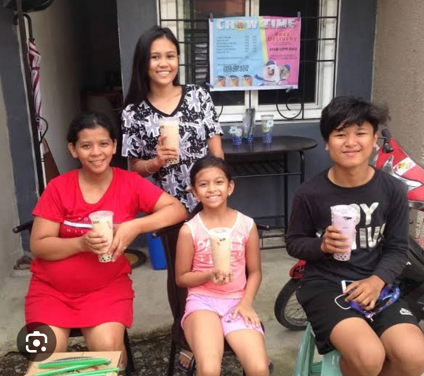
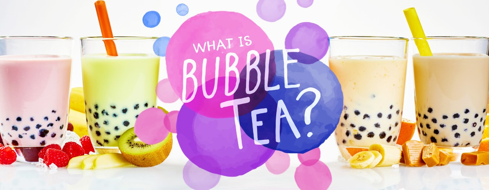
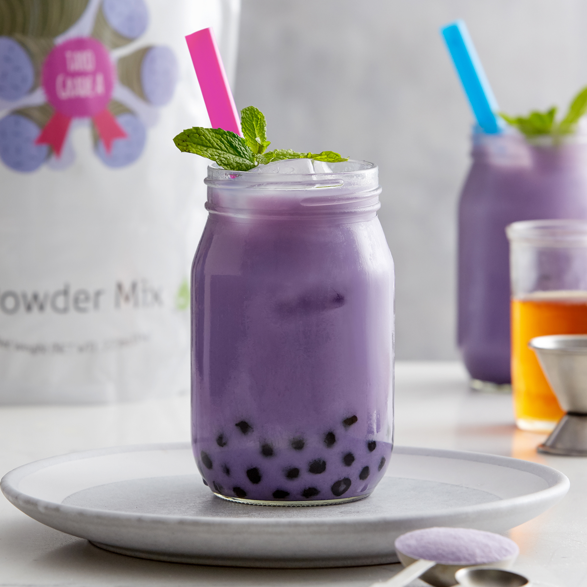
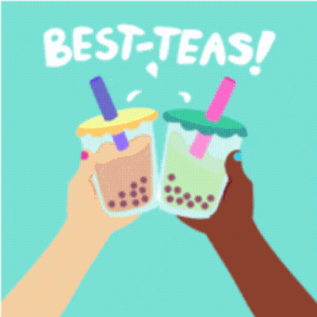
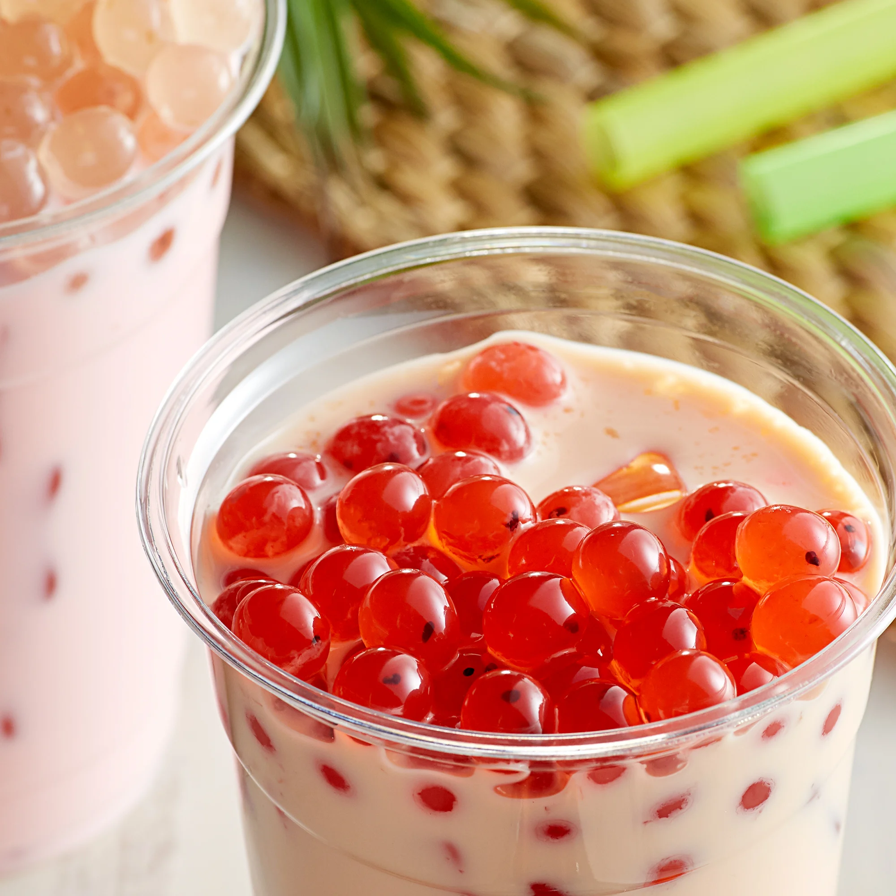
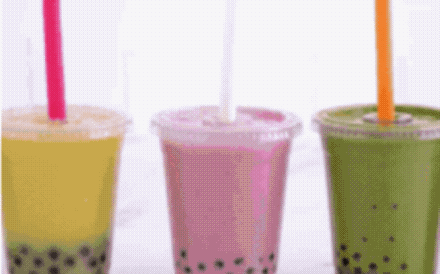
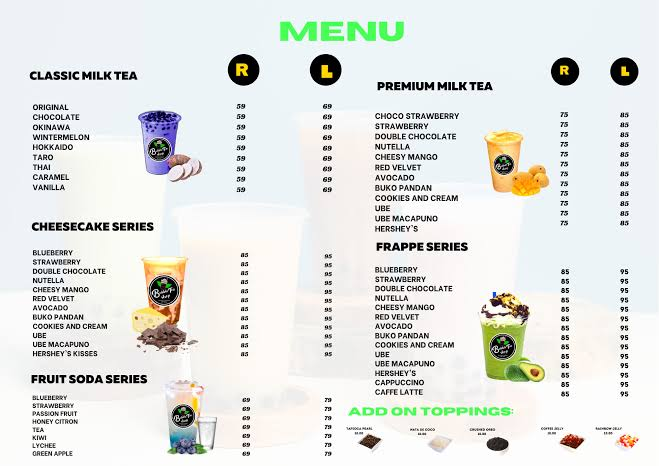

Thank you for choosing us for your bubble tea cravings.
We hope you enjoy your delightful bubble tea experience with us.


What Is Bubble Tea?
Bubble tea is a cold, flavored tea beverage that contains large chewy tapioca balls, making it an interactive drink and a sweet snack. Easy to recognize, bubble tea is paired with a colorful jumbo straw that’s both visually appealing and functional. With every sip of bubble tea, the tapioca pearls move easily up the wide straw. You’ll hear this Taiwanese drink referred to by several different names, including boba tea, pearl milk tea, boba milk tea, bubble milk tea, or simply boba.
What Is in Bubble Tea?

Bubble milk tea starts with a base of tea or juice. Milk powders, flavoring syrups, and sweeteners are added to the base, and the whole drink is shaken until it's frothy and full of bubbles. For the finishing touch, boba pearls and other toppings are added. Part of the fun of bubble tea is the ability to customize the drink with different teas, flavors, and toppings.

Types of Boba or bubble Tea
Bubble tea menus usually offer three types of boba tea:
Milk Tea - Teas, fruit flavors, or herbal flavors are combined with sweetened milk for a creamy beverage. Bossen taro is a popular milk powder with a nutty, vanilla flavor and a vibrant purple hue.
Flavored Tea - These sweetened teas contain added flavorings but no milk (jasmine green tea, honey black tea).
Juice - Bubble tea can be made without any tea at all! Fruit juice boba contains juice and no milk (passion fruit, mango, kiwi).
Bubble Tea Toppings
The toppings are what make bubble tea so much fun to drink! From chewy boba pearls to colorful jelly toppings, the wide variety of add-ins make boba tea a treat for the senses. Check out some of the most popular bubble tea toppings available:


Tapioca Pearls - Tapioca pearls are the most common boba topping you'll find. Usually dark brown or black in color, these chewy pearls have a slightly sweet flavor.
Popping Boba - These boba pearls pop with a burst of flavor when bitten. Try Bossen Bursting Boba in flavors like dragon fruit, pomegranate, and pink rose.
Jelly Toppings - Jelly toppings add a texture similar to gelatin, but most boba jellies are made with plant-based ingredients like natural coconut gel.
Crystal Boba - Crystal boba pearls have the appearance of colorful, translucent gems but are 100% edible! Try Bossen Crystal Boba in flavors like lychee, matcha, or taro.
Boba Tea Video
Visit (or play the video above) this video for a step-by-step How to make bubble tea:
Boba tea flavors range from fruity, sweet options to earthy, herbal options. The classic bubble tea is simply made with black tea, milk, ice, and tapioca pearls, but if you want to spruce up your drink you can opt for one of the many boba tea flavors. Below are some examples:
“A woman is like a tea bag — you never know how strong she is until she gets in hot water.”
“I like big cups and I cannot lie.”
"You make me bubbly inside.”
“Would you like an adventure now, or shall we have our tea first?”
“Serenitea: the absence of stress while drinking tea.”
“Life is like a cup of tea, it’s all in how you make it.”
"We got no troubles, life is the bubbles.”
“That’s matcha better.”
“I love you from the bottom of my boba.”
“Tea makes everything better.”
*★* Our Menu and Price List *★*

About Us
Welcome to our Bubble Tea Shop! We're passionate about crafting delightful bubble tea experiences. Our journey began with a commitment to quality ingredients and innovative flavors, ensuring each sip is a moment to savor.
Services
Indulge in a diverse menu of refreshing bubble teas that cater to all taste preferences. From classic milk teas to exotic fruit blends, our expertly crafted beverages are made with the finest teas, fresh fruits, and chewy tapioca pearls. Our commitment to excellence guarantees a satisfying and unique bubble tea experience every time.
Contact Us
Have a question or just want to say hello? Reach out to us!